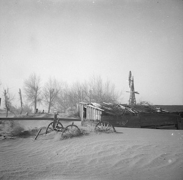

The Dust Bowl 1930
Between 1930 and 1940, the southwestern Great Plains region of the United States suffered a severe drought. Once a semi-arid grassland, the treeless plains became home to thousands of settlers when, in 1862, Congress passed the Homestead Act. Most of the settlers farmed their land or grazed cattle. The farmers plowed the prairie grasses and planted dry land wheat. As the demand for wheat products grew, cattle grazing was reduced, and millions more acres were plowed and planted.
Dry land farming on the Great Plains led to the systematic destruction of the prairie grasses. In the ranching regions, overgrazing also destroyed large areas of grassland. Gradually, the land was laid bare, and significant environmental damage began to occur. Among the natural elements, the strong winds of the region were particularly devastating.
With the onset of drought in 1930, the overfarmed and overgrazed land began to blow away. Winds whipped across the plains, raising billowing clouds of dust. The sky could darken for days, and even well-sealed homes could have a thick layer of dust on the furniture. In some places, the dust drifted like snow, covering farm buildings and houses. Nineteen states in the heartland of the United States became a vast dust bowl. With no chance of making a living, farm families abandoned their homes and land, fleeing westward to become migrant laborers.
In his 1939 book The Grapes of Wrath, author John Steinbeck described the flight of families from the Dust Bowl: "And then the dispossessed were drawn west--from Kansas, Oklahoma, Texas, New Mexico; from Nevada and Arkansas, families, tribes, dusted out, tractored out. Car-loads, caravans, homeless and hungry; twenty thousand and fifty thousand and a hundred thousand and two hundred thousand. They streamed over the mountains, hungry and restless--restless as ants, scurrying to find work to do--to lift, to push, to pick, to cut--anything, any burden to bear, for food. The kids are hungry. We got no place to live. Like ants scurrying for work, for food, and most of all for land." In all, 400,000 people left the Great Plains, victims of the combined action of severe drought and poor soil conservation practices.